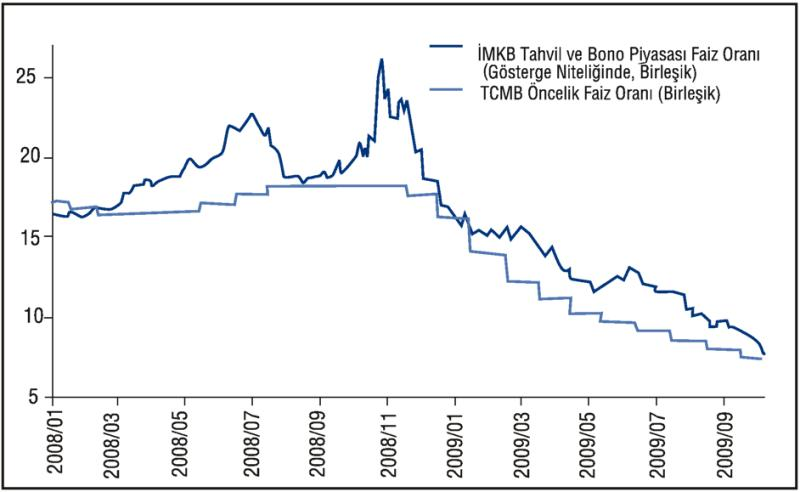

Küresel kriz, tüm dünya ile ticari ve finansal bağları bulunan Türkiye kapitalizmini de olumsuz yönde etkiledi. Gerek dış talep gerekse iç talepteki gerilemeye bağlı olarak Türkiye ekonomisinde üretim, ihracat ve işsizlik göstergeleri olumsuz yönde etkilendi.
Küresel krizin etkilerini hafifletmek amacıyla AKP iktidarı, para, maliye alanlarında, istihdam ilişkilerinde, yatırım, üretim, ihracat dallarında bir dizi, sermaye lehine düzenlemeler getirdi.
Merkez Bankası'ndan Faiz ve Kur Müdahaleleri
Merkez Bankası, piyasadaki döviz ve TL likiditesini artırmak amacıyla birçok önlem almıştır. Faiz indirimleri ile likiditeyi artırırken kura müdahale ile de olası kur şoklarını frenlemiş ve enflasyon hedefine de yardımcı olan kurun düşük seyrini de sağlamıştır.
2009 yılında enflasyon ve para politikası üzerinde temel olarak küresel ekonomideki gelişmeler belirleyici olmuştur. Talep ve maliyet yönlü baskıların zayıflamasıyla yurt içi enflasyon oranları da 2008 yılının son dönemlerinde düşüş eğilimine girmiş, bu eğilim 2009 yılının ilk dokuz aylık döneminde de devam etmiştir. Bu çerçevede, Merkez Bankası, 2008 yılı Kasım ayında başladığı politika faiz oranlarındaki indirim sürecine 2009 yılı boyunca devam etmiştir. 2009 yılının ilk on aylık döneminde politika faiz oranlarında toplam 825 baz puan indirim gerçekleştirilmiştir. İndirimler, faiz kararlarının piyasa faizleri üzerindeki belirleyiciliğini artırmış, politika faizlerine paralel olarak piyasa faizlerinde de belirgin bir düşüş olmuştur.
| PPK Toplantı Tarihleri | Faiz Oranı | Faiz Oranı* |
| 18 Eylül 2008 | Değişiklik Yapılmadı | -16,75 |
| 22 Ekim 2008 | Değişiklik Yapılmadı | -16,75 |
| 19 Kasım 2008 | -0,50 | -16,25 |
| 18 Aralık 2008 | -1,25 | 15,00 |
| 15 Ocak 2009 | -2,00 | 13,00 |
| 19 Şubat 2009 | -1,50 | 11,50 |
| 19 Mart 2009 | -1,00 | 10,50 |
| 16 Nisan 2009 | -075 | 9,75 |
| 14 Mayıs 2009 | -0,50 | 9,25 |
| 16 Haziran 2009 | -0,50 | 8,75 |
| 16 Temmuz 2009 | -0,50 | 8,25 |
| 18 Ağustos 2009 | -0,50 | 7,75 |
| 17 Eylül 2009 | -0,50 | 7,25 |
| 15 Ekim 2009 | -0,50 | 6,75 |
Kaynak: TCMB
* Bankalararası para piyasası ve İstanbul Menkul Kıymetler Borsası Repo pazarında uygulanmakta olan gecelik borçlanma faiz oranı

Merkez Bankası, 2008 yılı ortalarından itibaren Türk Lirası ve döviz likidite sıkışıklığını giderecek, iktisadi faaliyetteki daralmayı sınırlayacak önlemleri de almıştır. Bu bağlamda; 29 Ocak 2009 tarihinde bankalara Likidite Desteği Kredisi kullandırılması koşulları yeniden gözden geçirilerek rahatlama sağlanmıştır.
Döviz likiditesi desteklenerek olası kur şokları önlenmek istenmiştir. Bu amaçla, 10 Mart 2009 tarihinden itibaren günlük 50 milyon ABD doları tutarlı olmak üzere döviz satım ihalelerine başlanmıştır. Küresel piyasalardaki kaygıların azalmasıyla, 3 Nisan 2009 tarihinde döviz satım ihalelerine son verilmiş, bu süre zarfında gerçekleştirilen 18 ihalede toplam 900 milyon ABD doları satılmıştır.
Bunun yanı sıra, küresel krizin reel sektör üzerindeki olumsuz etkilerini azaltmak amacıyla, ihracat reeskont kredi kullanımının yaygınlaştırılması hedeflenmiştir.
Döviz kurunun tekrar aşağı hızlı seyri koşullarında da bu kez, 4 Ağustos 2009 tarihinden itibaren tekrar döviz alım ihalelerine başlanmıştır. 2009 yılında ihaleler yoluyla alımı yapılan toplam döviz miktarı 15 Ekim 2009 tarihi itibarıyla 2,29 milyar ABD dolarına ulaşmıştır. Merkez Bankası brüt döviz rezervleri ise 2 Ekim 2009 itibarıyla 70,1 milyar ABD dolar olarak gerçekleşmiştir.
| Yıl | Döviz Alım İhaleleri | Döviz Satım İhaleleri | Döviz Alım Müdahaleleri | Döviz Satım Müdahaleleri | Toplam Net Döviz Alımları |
| 2002 | 795 | - | 16 | 12 | 799 |
| 2003 | 5652 | - | 4229 | - | 9881 |
| 2004 | 4104 | - | 1283 | 9 | 5378 |
| 2005 | 7442 | - | 14565 | - | 22007 |
| 2006 | 4296 | 1000 | 5441 | 2105 | 6632 |
| 2007 | 9906 | - | - | - | 9906 |
| 2008 | 7504 | 100 | - | - | 7484 |
| 2009* | 2290 | 900 | - | - | 1390 |
Kaynak: TCMB
* 15 Ekim 2009 itibariyle
- Öte yandan, bankacılık sektörünün öz kaynak yapısını daha da güçlendirmek amacıyla bankaların kâr dağıtımına sınırlama getirilmiş ve bankaların kâr dağıtabilmesi BDDK onayına bağlanmıştır.
Vergi Destekleri
- Yurtdışındaki varlıkları yurtiçine getirmeyi amaçlayan, vergi indirimleri ve muafiyetlerini içeren Varlık Barışı uygulamasının geçerlilik süresi 30 Eylül 2009 tarihine kadar uzatılmıştır.
- Hisse senedi kazançlarında yerli yatırımcılara uygulanan yüzde 10'luk stopaj sıfıra indirilmiştir.
- 1 Eylül 2008 tarihi öncesindeki vergi borçlarının on sekiz ay süreyle yüzde 3 faizle taksitlendirilmesi imkânı getirilmiştir.
- Menkul Kıymet Yatırım Fonları ile Menkul Kıymet Yatırım Ortaklıklarının sermaye piyasasında yaptıkları işlemler nedeniyle elde ettikleri gelirlere BSMV muafiyeti getirilmiştir.
- Gerçek kişilere kullandırılan kredilerdeki Kaynak Kullanımını Destekleme Fonu (KKDF) kesintisi oranı yüzde 15'ten yüzde 10'a indirilmiştir.
- Kablolu, kablosuz ve mobil internet servis sağlayıcılığı hizmetine ilişkin Özel İletişim Vergisi yüzde 15'ten yüzde 5'e indirilmiştir.
- 30 Haziran 2010'a kadar tescili silinecek ve hurdaya çıkarılacak 1979 veya daha eski model motorlu taşıtlar için vergi ve ceza affı getirilmiştir.
- Tarım Ürünleri Lisanslı Depoculuk Kanunu kapsamında düzenlenen ürün senetlerinin elden çıkarılmasından doğan kazançlara 31.12.2014 tarihine kadar gelir ve kurumlar vergisi muafiyeti getirilmiştir.
- KOBİ birleşmelerini teşvik etmek amacıyla 31.12.2009 tarihine kadar birleşen KOBİ'ler kanunda belirlenen şartları sağlamaları kaydıyla, kurumlar vergisi muafiyeti ve yüzde 75'e kadar indirimli kurumlar vergisi uygulanmasından faydalanabileceklerdir.
- 16 Haziran 2009 tarihli 1. Mükerrer Resmi Gazete'de yayımlanarak yürürlüğe giren "Bazı Mallara Uygulanacak Katma Değer Vergisi ile Özel Tüketim Vergisi Oranlarının Belirlenmesine Dair Karar" ile, İç talebi canlandırmak amacıyla bazı sektörlerde 15.06.2009 tarihine kadar uygulanan geçici ÖTV indiriminin oranları yeniden belirlenerek süresi 30.09.2009 tarihine kadar uzatılmıştır. Buna göre;
- Motor silindir hacmi 1600 cm3'ü geçmeyen otomobillerde yüzde 37'den yüzde 18'e indirilen ÖTV oranı, yüzde 27 olarak,
- Üstü kapalı kasalı ticari araçlarda yüzde 10'dan yüzde 1'e indirilen ÖTV oranı, yüzde 3 olarak,
- Açık kasalı ticari araçlarda yüzde 4'ten yüzde 1'e indirilen ÖTV oranı, yüzde 2 olarak,
- Çekiciler, midibüsler, özel amaçlı taşıtlar ve kamyonlarda yüzde 4'ten yüzde 1'e indirilen ÖTV oranı, yüzde 1 olarak,
- Otobüslerde yüzde 1'den yüzde 0'a indirilen ÖTV oranı, yüzde 0 olarak,
- Minibüslerde yüzde 9'den yüzde 2'ye indirilen ÖTV oranı, yüzde 4 olarak,
- 250 cm3'ü geçmeyen motosikletlerde yüzde 22'den yüzde 11'e indirilen ÖTV oranı, yüzde 16 olarak,
- Beyaz eşyada yüzde 6,7'den yüzde 0'a indirilen ÖTV oranı, yüzde 2 olarak uygulanacaktır.
- Mobilya ve bilgisayarda 30.06.2009 tarihine kadar yüzde 18 yerine yüzde 8 olarak uygulanan KDV oranının süresi 30.09.2009 tarihine kadar uzatılmıştır.
İstihdam Destekleri
- Kısa çalışma ödeneğinin miktarı yüzde 50 oranında artırılarak, yararlanma süresi 3 aydan 6 aya çıkarılmıştır. (Ödenekten yararlanma süresi Bakanlar Kurulu Kararı ile 31.12.2009 tarihine kadar uzatılmıştır.)
- Genç ve kadın istihdam teşvikinin süresi uzatılmıştır.
- İşsizlik ödeneği yüzde 11 oranında artırılmıştır.
- Toplum yararına işler için oluşturulan çalışma programlarına aktarılan (TYÇP) kaynak artırılacaktır.
- Okul, hastane vb. sağlık kurumlarındaki bakım ve onarım işleri, ağaçlandırma ve erozyon kontrolü, çevre düzenlemesi ve arazi ıslahı, park ve bahçe düzenlemesi konularındaki geçici istihdam amaçlı programlar genişletilecektir.
- Program kapsamında 120 bin işsize doğrudan istihdam olanağı sağlanacaktır.
- İŞKUR'un mesleki eğitim faaliyetleri genişletilecektir.
- Vasıflı işgücü ihtiyacı karşılanacak ve işgücünün mesleki becerileri geliştirilecektir.
- Eğitim süresince katılımcılara günlük 15 TL ödeme yapılacaktır.
- Program kapsamında 200 bin işsize eğitim sağlanacaktır.
- Kişilere girişimcilik ve eğitim danışmanlığı verilecektir.
- Proje, İŞKUR tarafından KOSGEB ile beraber yürütülecektir.
- İşsizlere girişimcilik konusunda eğitim verilecektir.
- Bireylere firma kurma ve işletme aşamasında danışmanlık hizmeti verilecektir.
- Eğitim sonucunda, KOSGEB kriterleri çerçevesinde sunulacak projelere KOSGEB tarafından 4000 TL tutarında hibe verilecektir.
- Program kapsamında 10 bin kişiye girişimcilik eğitimi verilecektir.
- İşbaşı eğitimleri çerçevesindeki stajlar desteklenecektir.
- Meslek lisesi, dengi ve üstü eğitim kurumu mezunları yararlandırılacaktır.
- İş tecrübesi olmayan gençlere deneyim kazandırılacak ve iş bulma olanakları artırılacaktır.
- Stajyerlere 6 aya kadar İŞKUR tarafından günlük 15 TL ödeme yapılacaktır.
- Program kapsamında 100 bin genç, stajyer olarak istihdam edilecektir.
- İşyerlerinde mevcut istihdamın üzerinde yaratılacak ilave istihdam için prim desteği sağlanacaktır.
- İşyerlerinde Nisan 2009'daki mevcut istihdama ilave olarak işe alınan işçiler için uygulanacaktır.
- Başvuru süresi 2009 yılı sonunda sona erecektir. Başvuru süresini 6 ay uzatmaya Bakanlar Kurulu yetkili olacaktır.
- Asgari ücret üzerinden işveren primi 6 ay boyunca devlet tarafından karşılanacaktır.
- Yararlanma süresini 6 ay uzatmaya Bakanlar Kurulu yetkili olacaktır.
- Aktif işgücü programlarının güçlendirilmesi konusundaki analitik çalışmalar kapsamında;
- İl İstihdam ve Mesleki Eğitim Kurulları'nın etkinliği artırılacaktır.
- İstihdam Şurası toplanacaktır.
- Fon yararlanıcılarının profilleri çıkarılacaktır.
- Teşviklerin etkinliği incelenecektir.
- Mesleki eğitimler ve kullanılan kaynağın etkinliği incelenecektir.
Yatırım Destekleri
- Yatırım ve istihdamın teşvikine ilişkin 5084 sayılı kanunun gelir vergisi, sigorta primi ve enerji desteği teşviklerinden yararlanma süresi 1 yıl uzatılmıştır.
- Bölgesel gelişmişlik farklılıklarını azaltmayı, rekabet gücünü artıracak teknoloji ve ARGE içeriği yüksek büyük ölçekli yatırımlara destek olmayı, sektörel kümelenmeyi desteklemeyi ve teşvik kapsamındaki yatırım konularında ekonomik ölçek kriterlerini öne çıkarmayı amaçlayan yeni bir teşvik sistemi hazırlanmıştır. Yeni teşvik sistemi; Büyük Proje Yatırımları, Bölgesel ve Sektörel Teşvik Sistemi ve Genel Teşvik Sistemi olmak üzere üç gruptan oluşmaktadır. Sistemin getirdiği bazı destekler aşağıda sıralanmıştır:
- Kurumlar/Gelir Vergisi İndirimi
- Sosyal Güvenlik Primi İşveren Hissesinin Hazine tarafından karşılanması
- Faiz Desteği
- Yatırım Yeri Tahsisi
- KDV İstisnası
- Gümrük Vergisi Muafiyeti
- Yüksek teknoloji ve sermaye gerektiren AR-GE ve teknoloji kapasitesini artıran 12 sektörde büyük proje yatırımları desteklenecektir.
- Tekstil, konfeksiyon, hazır giyim, deri ve deri mamulleri sektörlerinde faaliyette bulunan, asgari 50 kişilik istihdam sağlayan ve 31.12.2010 tarihine kadar 1. ve 2. bölgelerden 3. ve 4. bölgelere taşınacak tesislere;
- Kurumlar vergisi oranı 5 yıl süreyle yüzde 20 yerine yüzde 5 oranında uygulanacak,
- Mevcut istihdam da dahil olmak üzere, bu tesislere taşındıkları bölgede (3. ve 4. bölgeler) 5 yıl süreyle SSK işveren primi Hazine tarafından karşılanacak,
- Hazine tarafından nakliye gideri desteği verilecektir.
Üreticiye ve İhracatçıya Sağlanan Kredi ve Garanti Düzenlemeleri
- Reel sektörü desteklemek amacıyla KOBİ'lere sıfır veya düşük faizli kredi desteği verilmiştir.
- Vergi ve SGK prim borcu bulunan esnaf ve sanatkarlar ile hizmet ve ticaret sektörlerindeki KOBİ'lere de KOSGEB kredilerinden yararlanma imkanı getirilmiştir.
- KOSGEB'in bütçesi, 2009 yılında 2008 yılına göre yüzde 48 oranında artırılmıştır.
- İhracatçılara kullandırılmak üzere belirlenmiş olan ihracat reeskont kredisi limiti kademeli olarak artırılarak, 500 milyon ABD dolarından 2,5 milyar ABD dolarına yükseltilmiştir.
- Ziraat Bankası ve Tarım Kredi Kooperatifleri'nin kullandırdığı düşük faizli tarım kredilerinin vadesi işletme kredilerinde 18 aydan 24 aya, yatırım kredilerinde 5 yıldan 7 yıla çıkarılmıştır.
- Firmaların Eximbank kredi kapsam ve limitleri artırılmıştır.
- Eximbank'ın doğrudan kullandırdığı kısa vadeli kredilerdeki geri ödeme vadeleri 2009 Ocak-Mart döneminde 3 ay uzatılmıştır.
- Hazine'nin 2009 yılında Eximbank'a sağlayabileceği toplam garanti ve ikraz limiti 4 milyar dolara çıkarılmıştır.
- Eximbank'ın ödenmiş sermayesi 1 Milyar TL'den 1, 5 Milyar TL'ye yükseltilmiştir.
- Üretici ve KOBİ'lerin finansman imkanlarına daha kolay erişebilmesi amacıyla Kredi Garanti Desteği uygulamasına başlanmıştır. Buna göre:
- Kredi garanti kurumlarına 1 milyar TL kaynak aktarılacaktır. Bu kaynak 10 milyar TL'lik krediye kefalet sağlanmasına imkan verecektir.
- Kredinin yüzde 65'ine Kredi Garanti Kurumu tarafından kefalet sağlanacak, kredi riskinin yüzde 35'ini ise bankalar üstlenecektir.
- Asgari 6 ay, azami 4 yıl vadeli TL, döviz ve dövize endeksli krediler destek kapsamında yer alacaktır.
- 15 Temmuz 2009 tarihli Resmi Gazete'de yayımlanan Bakanlar Kurulu Kararı'nı takiben iki yıl içinde kullanılacak krediler bu destekten yararlanacaktır.
Kredi Kullanımı ve Kredi Kartlarına İlişkin Düzenlemeler
Döviz cinsi ve dövize endeksli kredi kullanımına ilişkin esaslarda yapılacak değişiklikle, tüketicilerin ve firmaların döviz cinsi ve dövize endeksli kredi kullanımları yeniden düzenlenmiştir. Buna göre:
Döviz geliri olan firmalar,
- Yurtiçinden döviz cinsi ve dövize endeksli kredi kullanmaya devam edecektir.
- Daha önce 18 ay olan vade sınırı dikkate alınmaksızın döviz cinsi kredi kullanabileceklerdir.
Döviz geliri olmayan firmalar,
- Ortalama vadesi bir yıldan uzun olmak üzere, 5 milyon ABD doları ve üzerinde yurtiçinden döviz kredisi kullanabileceklerdir.
- Türkiye'deki bankalarda bulundurulacak döviz ve/veya belirli nitelikleri haiz yabancı para menkul kıymetleri teminat göstermek suretiyle, teminat tutarı kadar vade sınırı olmadan ticari ve mesleki amaçlı yurtiçinden döviz kredisi kullanabileceklerdir.
- Vade ve tutar sınırlaması olmadan dövize endeksli kredi kullanmaya devam edeceklerdir.
Tüketiciler,
- Bugüne kadar yurtiçinden ve yurtdışından döviz cinsi kredi kullanamayan tüketiciler yeni düzenleme ile dövize endeksli kredi kullanamayacaktır.
- Kredi kartı borçlarının yeniden yapılandırılmasına ilişkin yapılan yasal düzenlemeyle, 31 Mayıs 2009 tarihi itibariyle ödeme ihtarı çekilmiş, icra takibi başlatılmış ya da banka tarafından takip olunan krediler grubunda sınıflandırılmış kredi kartı borçlarının yeni bir ödeme planına bağlanması imkanı getirilmiştir.
- BDDK, yapılan düzenlemeyle, halihazırda yüzde yirmi olarak uygulanan asgari ödeme tutarını, Hazine Müsteşarlığı ve Türkiye Cumhuriyet Merkez Bankasının olumlu görüşünü alarak; yüzde kırka kadar artırmaya ve artırdığı oranı yüzde yirmiye kadar düşürmeye yetkili kılınmıştır. Asgari ödeme oranı, BDDK tarafından, belirtilen sınırlar dahilinde kart hamili grupları itibariyle farklılaştırılabilecektir.